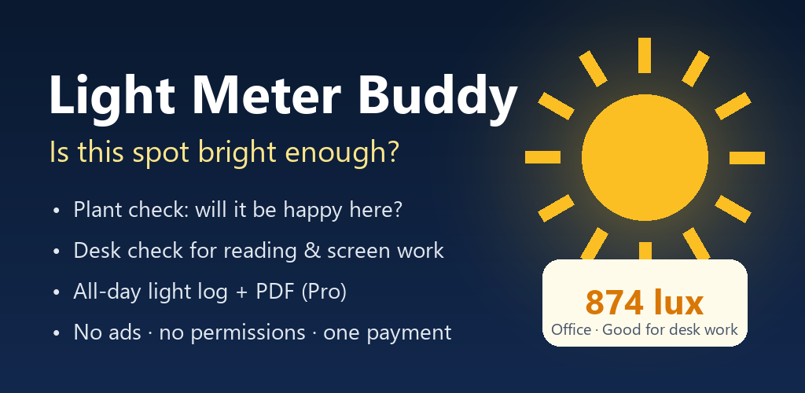
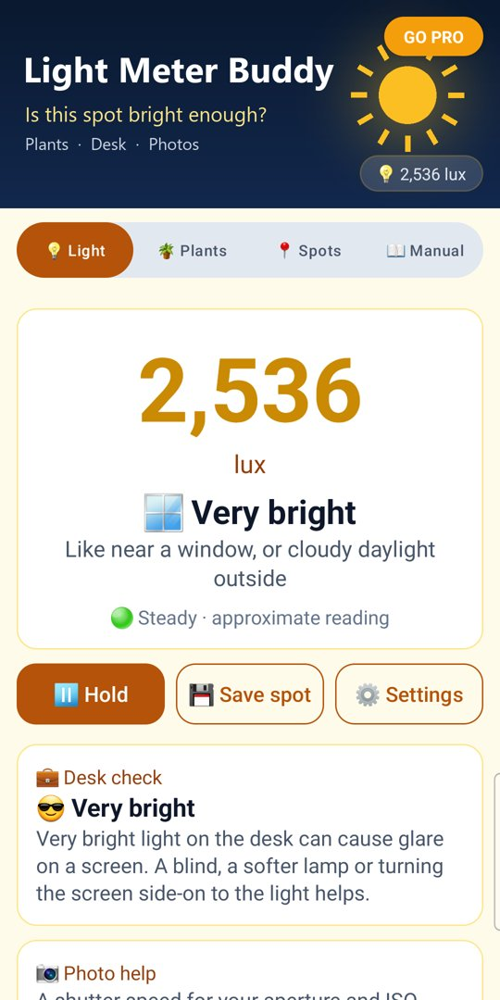
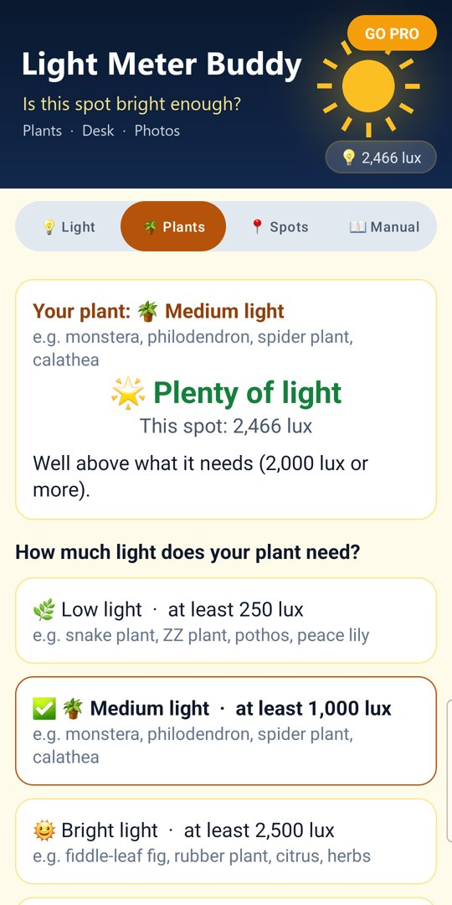
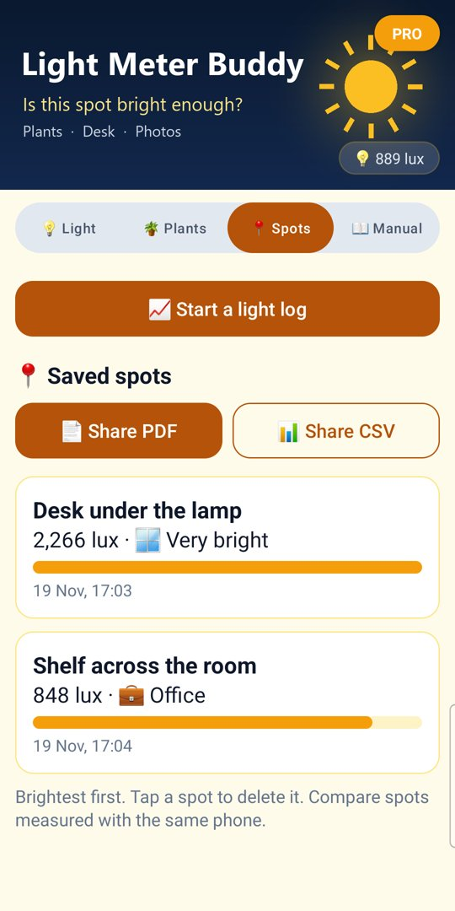
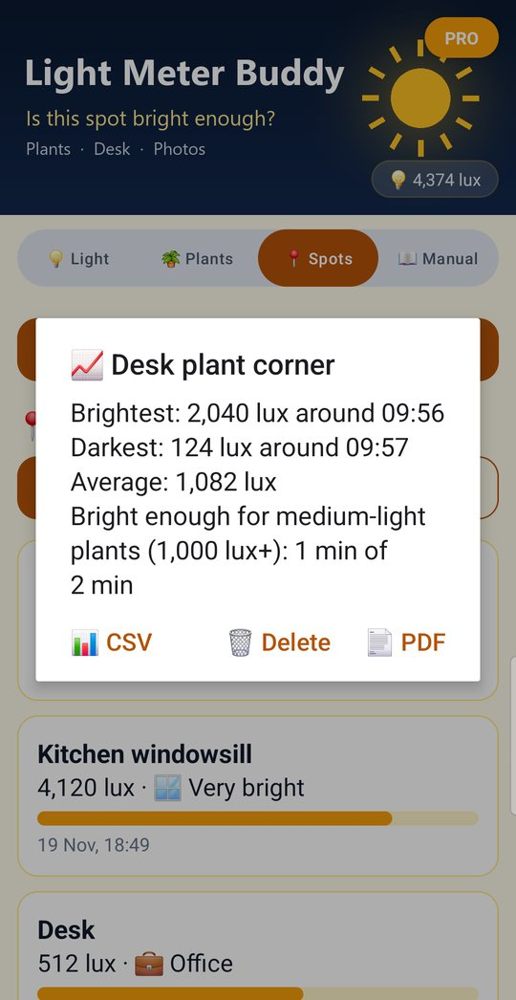

Everything below is the same text as the Manual in the app (📖 Manual tab).
Light Meter Buddy measures how much light falls on a spot, in lux, with the phone's own light sensor, and tells you in plain words what that means: dim, living room, office, very bright or daylight. It checks whether a plant will be happy in a spot, whether a desk is bright enough to work at, and gives a simple camera exposure.
It never asks for permissions and works without internet.
The light sensor is at the top of the screen, next to the front camera.
The screen's own brightness doesn't change the reading.
Phone light sensors are made for adjusting the screen, not for measuring, so readings are approximate. When we tested two phones side by side under the same lamp, one read 15-30% higher than the other.
For work that needs certified readings (for example a lighting survey), use a calibrated light meter.
⚙️ Settings › Units shows foot-candles instead (1 foot-candle = 10.764 lux), as used in American plant and lighting guides.
Pick how much light your plant needs and hold the phone at leaf height, facing the window:
These are common indoor-gardening guidelines. Measure during the day, around midday if you can: the light by a window changes a lot through the day and with the seasons. ⭐ Pro's 📈 Light log records a spot all day.
For reading, writing and screen work, the usual guidance is about 500 lux on the desk (for example the European standard EN 12464-1 for offices). Under 300 lux is dim for paper work; under 100 lux will tire your eyes. Very bright light on a desk (sun or a strong lamp) can cause glare on a screen.
Lay the phone flat on the desk where you read or type, screen up.
Gives a shutter speed for the aperture and ISO you pick, like a camera's handheld light meter. Hold the phone where your subject is, screen facing the camera, so it measures the light falling on the subject.
It's a starting point: check the first photo and adjust.
💾 Save spot saves the light at a place with a name (for example "Kitchen windowsill"), the date and time. The 📍 Spots tab lists them brightest first with a bar for each, so you can see your brightest and darkest spots at a glance. Tap a spot to delete it. 📄 Share PDF and 📊 Share CSV send them all.
Records the light at one spot for hours, for example a windowsill through a whole day.
1. On 📍 Spots, tap 📈 Start a light log and name it. How often it records is set in ⚙️ Settings (every minute, 5 or 15 minutes; 5 unless you change it).
2. Leave the phone at the spot, screen facing the light, with the app open. Plug it in for a long log.
3. The screen goes dark to save the battery (the reading isn't affected), but the app keeps measuring. Tap the screen to see it.
4. Tap ⏹ Stop when you're done.
Each entry has the lowest, middle and highest light in that period. The summary shows the brightest time and how many hours were bright enough for your plant. If you leave the app or lock the phone, the log pauses, and that time isn't counted.
Free: the live light meter in lux or foot-candles, the plain-words answer, Hold, the plant check and the desk check. No ads.
Pro (one payment, no subscription): saved spots compared brightest first, 📈 light logs, 📷 photo help, and PDF and CSV reports.
Tap GO PRO at the top. Restore purchase gets Pro back on a new phone with the same Google account.
No account, no sign-in, and it never asks for permissions. Your settings, spots and light logs are kept only in the app's own storage on this phone. Light Meter Buddy has no servers. A PDF or CSV only leaves the phone when you share it yourself.
Google Play handles the Pro purchase.
Light Meter Buddy v1.0 (Build 1)
Publisher: AppStack Studio
| Question | Many light meter apps | Light Meter Buddy |
|---|---|---|
| Ads? | Many are paid for by ads | No ads, ever |
| Price | Free with ads, or a subscription for plant features | Free meter, plant check and desk check with no ads; Pro is one payment for life (no subscription) |
| Very dim light | Often shows 0 or a number the sensor can't really measure | Shows "under 5 lux" and 🌑 Very dim instead of a number it can't trust |

1. Light
The light in lux, in plain words, and the desk check.

2. Plants
Pick how much light your plant needs and see if the spot suits it.

3. Spots (Pro)
Your spots side by side, brightest first, with a PDF or CSV.

4. Light log (Pro)
A spot's light for hours: brightest time and hours bright enough for your plant.
Screenshots: Light Meter Buddy 1.0 on a Samsung Galaxy S20 and S24.